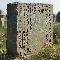
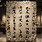

历史记录
查看您的所有碑文识别记录和历史操作
筛选：
状态：
排序：
| 识别时间 | 碑文名称 | 朝代 | 字数 | 置信度 | 状态 | 操作 |
|---|---|---|---|---|---|---|
| 2023-06-15 14:30 |
李白墓碑文
识别ID: #BS20230615001
|
唐代 | 286字 | 98.7% | 已完成 |
|
| 2023-06-10 09:15 |

张迁碑
识别ID: #BS20230610002
|
汉代 | 423字 | 97.5% | 已完成 |
|
| 2023-06-05 16:40 |
九成宫醴泉铭
识别ID: #BS20230605003
|
唐代 | 368字 | 99.2% | 已完成 |
|
| 2023-05-28 11:25 |
醉翁亭记碑
识别ID: #BS20230528004
|
宋代 | 402字 | 98.1% | 已完成 |
|
| 2023-05-20 09:50 |

永乐大典序碑
识别ID: #BS20230520005
|
明代 | 512字 | 97.8% | 已完成 |
|
| 2023-05-15 15:20 |
模糊碑文
识别ID: #BS20230515006
|
未知 | - | - | 已失败 |
|
显示 1-6 条，共 24 条记录